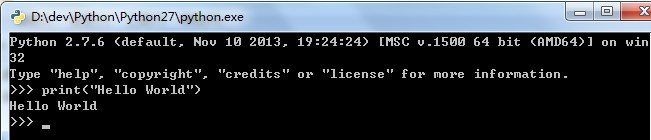
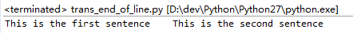
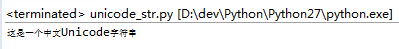
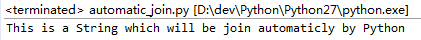
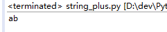

#!/usr/bin/python
#--coding:utf-8--
'''
Created on 2016年12月3日@author: Administrator
'''
print("Hello World")
print("This is a Python program")
在Python对话框中标准输出：

【注】Python的py文件的第一行以#!开头，称为组织行。告诉系统程序运行时采用哪种编译器
Python的基本数据类型有数、字符串
Python有四种类型的数：整数、长整数、浮点数、复数
1）使用单引号（'）的字符串，其中的空格、制表符照原样保留
2）使用双引号（"）的字符串，与单引号完全相同
3）使用三引号（'''）或（"""）指示一个多行字符串。可以在三引号中自由使用单引号、双引号
■转义字符
1）要在字符串中使用单引号，可以使用【\'】转义，也可以使用双引号，在双引号的字符串中自由使用单引号
trans_single_quotes.py
#!/usr/bin/python
#--coding:utf-8--
'''
Created on 2016年12月3日
@author: Administrator
'''
print("What's your name?")
print('What\'s your name?')
输出结果：
2）如果需要转义反斜杠（\），无论是单引号、双引号，都需要用【\】进行转义
trans_backslash.py
#!/usr/bin/python
#--coding:utf-8--
'''
Created on 2016年12月3日
@author: Administrator
'''
print("I want to output a backslash -> \\")
print('I want to output a backslash -> \\')
输出结果：

3）反斜杠作为行尾延续符号，支持字符串在py文件中换行。打印出来的仍然是一行
trans_end_of_line.py
#!/usr/bin/python #--coding:utf-8--
'''
Created on 2016年12月3日
@author: Administrator
'''
print("This is the first sentence\
This is the second sentence")
输出结果：

■自然字符串
如果字符串不需要转义处理，需要指定一个自然字符串
normal_str.py
#!/usr/bin/python
#--coding:utf-8--
'''
Created on 2016年12月3日
@author: Administrator
'''
print(r'Normal String to deal with \n')
输出结果：

■Unicode字符串
使用u/U表示Unicode字符串，在处理文件时要注意，当文件中含有非英文需要使用unicode字符串
unicode_str.py
#!/usr/bin/python
#--coding:utf-8--
'''
Created on 2016年12月3日
@author: Administrator
'''
print(u"这是一个中文Unicode字符串")
输出结果：

■字符串不能修改
■相邻放置的字符串Python会自动连接
automatic_join.py
#!/usr/bin/python
#--coding:utf-8--
'''
Created on 2016年12月3日
@author: Administrator
'''
print('This is a String' ' which will be join automaticly by Python')
输出结果：

■在处理正则表达式时，需要注意使用自然字符串，否则需要使用很多的反斜杠（backslash） ，因为正则表达式中大量使用反斜杠（backslash），以'\l'为例，如果采用自然字符串只需写成r'\l'
■变量标识符规则： 1）标识符的第一个字符必须是大小写字母或下划线 2）标识符其他部分由大小写字母、下划线、数字组成 3）标识符大小写敏感 4）减号不能出现在标识符中
正常的程序物理行可以通过反斜杠（\）组合成一个逻辑行
execable.py
s = 'This is a String \
This continues the String.'
print s
输出：
This is a String This continues the String.
同一层次的语句必须有相同的缩进。这样的一组语句称为块。
字符串相加，相当于字符串连接
string_plus.py
#!/usr/bin/python
#--coding:utf-8--
'''
@author: Administrator
'''
print 'a' + 'b'
输出

string_multiple.py
#!/usr/bin/python
#--coding:utf-8--
'''
@author: Administrator
'''
print 'la'*3
输出

4）** 幂：返回x的y次幂 5） / 除：x除以y。整数与整数相除，返回整数；浮点数相除，返回浮点数 division.py
''' Created on 2016年12月17日
@author: Administrator ''' print 4/3 print 4.0/3 print 4/3.0 输出
6）// 取整除：返回整数部分 % 取余 7）<< 左移：把一个数的比特向左移一定数目（每个数在内存中都表示为二进制数） 8）>> 右移：把一个数的比特向右移一定数目 bit_shifting.py
''' Created on 2016年12月17日
@author: Administrator ''' print 2<<1 print 2>>1 输出
9）& 按位与：数的按位与 | 按位或：数的按位或 ^按位异或：数的按位异或 ~按位取反：x的按位取反-(x+1) bit_manipulation.py
''' Created on 2016年12月17日
@author: Administrator ''' print 5 & 3 print 5 | 3 print 5 ^ 3 print ~5 输出
10） < 小于 > 大于 返回特殊变量true、false（1,0） <=小于等于 >=大于等于 ==等于，在比较字符串时，比较字符串内容 != 不等于 logic_compare.py
''' Created on 2016年12月17日
@author: Administrator ''' print '5>3:' print 5>3 print '5<3:' print 5<3 print '5>=3:' print 5>=3 print '5<=3:' print 5<=3 print '5 == 5:' print 5 == 5 a = 'str' b = 'stR' print "a(str)==b(stR):" print a == b print "a(str)!=b(str):" print a != b print 'a(str)==b(str)' b = 'str' print a == b 输出
11）not 布尔非 and 布尔与 or 布尔或 logic.py
''' Created on 2016年12月17日
@author: Administrator ''' x = True print 'logic not:',not x y = False print 'logic x and y:', x and y print 'logic x or y:', x or y 输出
7 运算优先级 优先级由低到高： 1）lambda表达式 2）or 布尔或 3）and 布尔与 4）not 布尔非 5）in，not in 成员测试 6）is，is not 同一性测试 7）<. <=, >,>=, ==, != 比较 8）| 按位或 9）^ 按位异或 10）& 按位与 11）<<, >> 移位 12）+，- 加法、减法 13），/，% 乘法、除法、取余 14）+x, -x 正负号 15）~x 按位取反 16）* 指数 17）x.attribute 属性参考 18）x[index] 下标 19）x[index:index] 寻址段 20）f(arguments ...) 函数调用 21）(expression...) 绑定或元祖显示 22）[expression...] 列表显示 23）{key:datum} 字典显示 24） ‘expression’ 字符串转换 建议使用括号确保正确的运算优先级